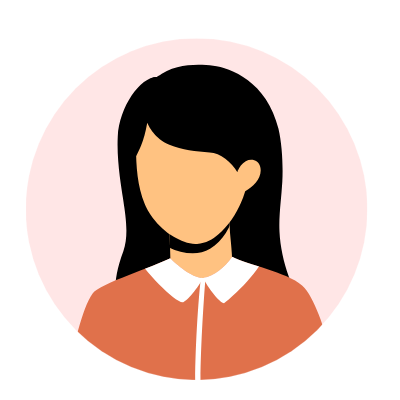
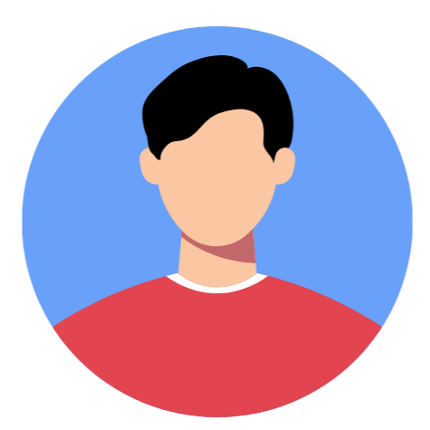
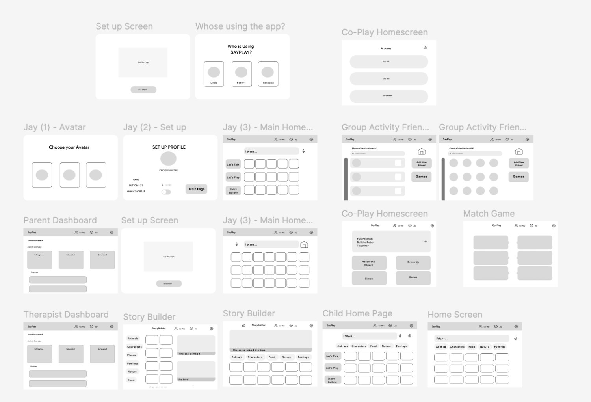
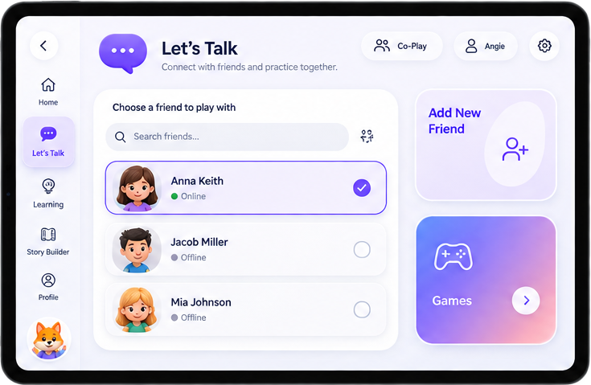
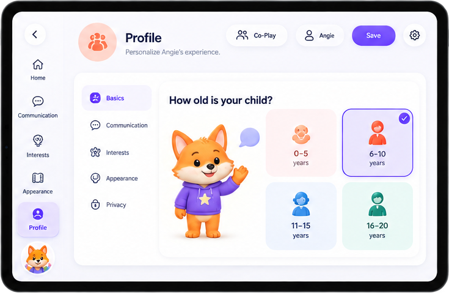
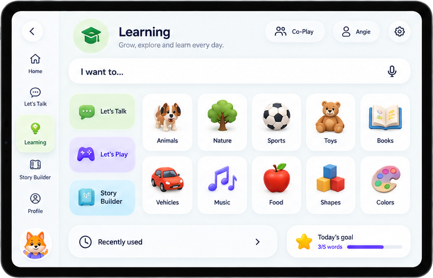
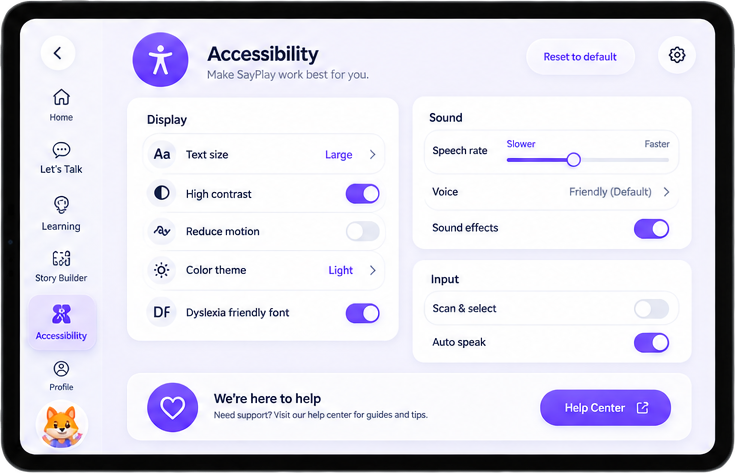

SayPlay
A digital AAC app that helps children with cerebral palsy communicate through play.


I designed an AAC platform that gives children with cerebral palsy a voice through play
Over the summer of 2025 I led SayPlay in partnership with the United Cerebral Palsy Center of Greater Cleveland, working alongside two developers. Several of my accomplishments included:
Eight weeks embedded at UCP, interviewing clinicians across three disciplines and observing therapy sessions.
Owned the end-to-end product design — four feature areas, an accessible component library, and four illustrated avatars.
Set direction for two developers, translated clinical feedback into scope, and kept the build accessible-first.
How might we design an AAC system that acts less like a tool and more like a playful, emotionally intelligent companion?
Existing AAC tools weren't built for how young children with cerebral palsy actually think and move
Children with cerebral palsy often experience significant speech and motor impairments that make verbal communication difficult or impossible. While AAC tools exist to support expressive language, many are designed without considering the unique cognitive, physical, and emotional needs of young children with motor impairments.
This results in tools that are unintuitive, disengaging, and difficult for children and caregivers to use consistently. There is a pressing need for an accessible, adaptable, and engaging AAC platform that empowers children with cerebral palsy to express themselves more independently and meaningfully — both at home and in therapy settings.
SayPlay: an AAC platform built around play, not just words
With help and insights from therapists, caregivers, and children at the United Cerebral Palsy Center of Greater Cleveland, I created SayPlay — a digital AAC platform thoughtfully designed to meet the unique needs of children with cerebral palsy. The app integrates emotional expression, social interaction, and playful learning, combining accessibility with delight. SayPlay empowers children to express themselves confidently — not just with words, but with play, emotion, and connection.

I assessed five existing AAC apps to find the gap
I looked at the leading platforms in the AAC space and noted how much adult support each one assumes — and how little emotional vocabulary any of them carry.
I spent eight weeks at UCP with therapists, caregivers, and the children themselves
Speech-language pathologists, occupational therapists, and physical therapists — hearing three disciplines talk about the same child surfaced four themes in affinity mapping:
Cognitive overload
“There's too much on the screen. He spends longer hunting for the symbol than saying the thing.”
Emotional expression
“She can ask for juice, but she can't tell me she's frustrated. That's the part we're missing.”
Social engagement
“It's something they do with me in a session. It never becomes something they do with each other.”
Adult dependence
“He can't get to the page he wants on his own, so he waits for an adult to do it for him.”
Three people have to succeed for SayPlay to work

Sarah, age 6
Primary userHas spastic cerebral palsy and attends weekly occupational therapy. Highly curious, tires easily, struggles with fine motor control.
Communicate thoughts, choices, and emotions clearly. Play with purpose.
Cluttered tools, limited vocabulary, overly complex instructions.
Maya, 39
CaregiverA single mother of two working full-time as a nurse. Deeply involved in her son's care but struggles to keep up with his therapy progress.
Stay informed, support therapy carryover at home, advocate at school.
No visibility into sessions; unsure how to reinforce skills at home.

John
Occupational therapistRuns weekly sessions across a wide range of abilities and reports outcomes back to families and healthcare teams.
Track progress over time and customise therapy to each child.
Rigid tools; manual tracking eats time better spent with the child.
Mapping every screen before adding a single colour
Low-fidelity screens for all three roles — the child’s communication board and story builder, the co-play activity flows, and the parent and therapist dashboards. Working in grey kept the focus on hierarchy, button size, and how few taps it takes to say something.

The four themes mapped to four feature areas
Each one answers a theme directly — personalisation for overload, adaptivity for motivation, caregiver control for dependence, and social tools for connection.
Custom avatars
Children choose a playful character to represent them, creating ownership and comfort — and making communication feel less intimidating.


An adaptive home page
The home page grows with each child, surfacing favourite activities, most-used tools, and personalised modules so every login feels familiar.
Personalised profile settings
Caregivers tailor the platform to a child's communication style — full sentences, single words, gestures, or AAC — from a short guided setup.


Social communication tools
With Add Friends, children connect with peers and caregivers in a safe space — choosing who to play with and practising in real social settings.
A library built for large targets and high contrast
What I'd carry into the next accessibility project
Accessibility takes empathy and iteration.
It's never one-size-fits-all — every detail matters, from button size to contrast to the cognitive load of a single tap.
Collaboration with real users is everything.
Partnering with therapists, families, and children at UCP grounded every decision in lived experience.
Play is a powerful entry point for language.
Emotional expression and storytelling aren't extras — they're building blocks for confidence and language development.
The best interfaces disappear.
The goal was never a functional app, but one where the technology gets out of the way and the child's voice takes centre stage.